地政学
グラナダは地中海沿岸から内陸へ入った丘陵都市で、シエラネバダとベガの農地を背にします。ナスル朝最後の都として、スペイン国家、アンダルシア、イスラム世界の記憶を今も結ぶ古都で、水路と峠道が地域の位置を決めます。

🇪🇸 スペイン / アンダルシア / World City Atlas
アルハンブラの丘、アルバイシンの白い路地、大学、茶屋、タパス、雪山から流れる水が、イスラムとキリスト教の記憶を生活の坂道へ重ねるアンダルシアの古都。
都市の骨格
グラナダは巨大な経済都市ではありませんが、アルハンブラ、アルバイシン、大学、観光労働、灌漑の歴史、シエラネバダの気候が密接に重なります。坂道と水の流れを追うと、宗教、権力、暮らしの層が見えてきます。
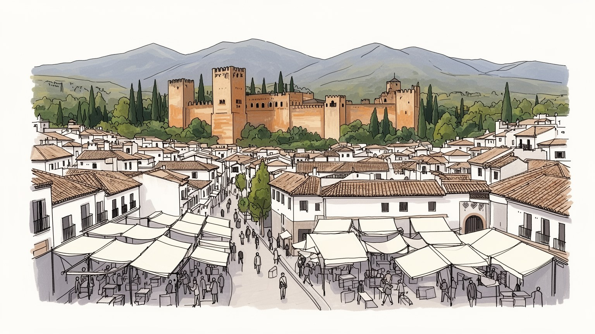
グラナダは地中海沿岸から内陸へ入った丘陵都市で、シエラネバダとベガの農地を背にします。ナスル朝最後の都として、スペイン国家、アンダルシア、イスラム世界の記憶を今も結ぶ古都で、水路と峠道が地域の位置を決めます。
経済はアルハンブラ観光、大学、医療、行政、ホテル、飲食、小売、近郊農業、工芸に支えられます。華やかな旧市街の背後で、清掃、宿泊、厨房、案内、修復、バス運行が都市を動かし、季節雇用と学生活動も家計に響きます。
モスクの記憶、教会、大聖堂、修道院、ユダヤ人地区の名残、聖週間、フラメンコ、茶屋街が重なります。宗教は観光装飾ではなく、征服、改宗、祈り、祭礼を通じて路地に時間を残し、住民の季節行事を形づくる古都です。
丘の眺望、無料タパス、学生の夜、アルバイシンの路地は魅力ですが、住民には混雑、短期賃貸、坂道、高齢化、夏の暑さ、冬の冷えが日常課題になります。美しさと負担が近い都市で、住まいと観光の距離が常に問われます。
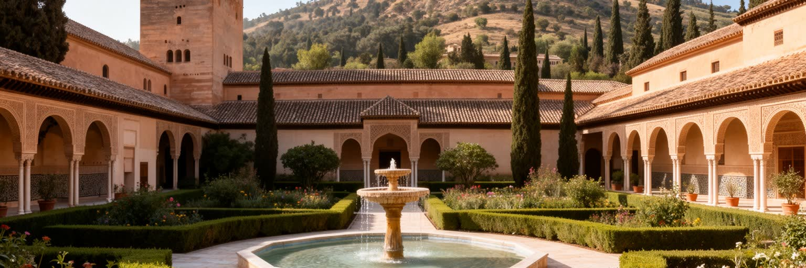
アルハンブラはグラナダを世界に知らせる名所ですが、単なる宮殿観光ではなく、都市の読み方を決める高台の装置です。ナスル朝の宮廷、要塞、庭園、詩文、幾何学装飾、水盤は、権力が軍事、祈り、涼しさ、眺望をどのように一体化したかを示します。丘の上からはアルバイシン、サクロモンテ、カテドラル、ベガの平野、シエラネバダが見え、イスラム王朝の都がキリスト教王権の都市へ組み替えられた過程も地形として分かります。訪問者は美しい中庭だけを見がちですが、その維持には修復技術、庭師、警備、清掃、研究、地域交通が欠かせません。宮殿が混むほど、旧市街の宿泊、飲食、土産物、住宅価格にも影響が及びます。時間指定の入場、坂を上るバス、夜間見学、修復中の区画は、遺産を守りながら人を受け入れる難しさを示します。宮殿の価値は内部だけで完結せず、遠景を守る建築規制、丘の植生、アクセス道路、周辺の土産物化を抑える判断に支えられます。美の中心であるほど、都市全体の管理能力が問われます。高台の静けさを保つには、展望台の混雑、夜の騒音、観光バスの乗降、土産物の広がりまで調整しなければなりません。宮殿を守るとは、周囲の生活圏を壊さずに世界的な注目を受け止めることでもあります。石壁の外へ視線を戻すと、遺産は街の交通、住宅、労働と切り離せないことが分かります。そこに世界遺産都市の現実があります。
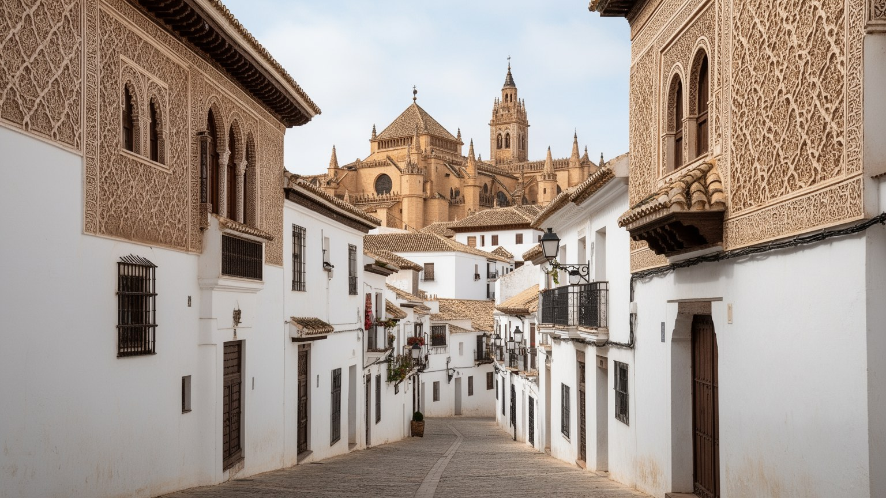
グラナダの宗教的な厚みは、イスラムの美を保存した都市という一言では収まりません。ナスル朝の宮廷文化、モスクの跡、大聖堂、王室礼拝堂、修道院、聖週間の行列、モリスコの記憶、ユダヤ人地区の痕跡が、路地や広場の向きに折り重なります。1492年の征服後、都市はキリスト教王権の象徴へ作り替えられたが、建築、灌漑、地名、食、音楽、手工芸には以前の層が残りました。宗教の重なりは調和だけではなく、改宗、追放、監視、同化の歴史も含みます。だからグラナダを歩くときは、装飾の美しさと権力の置き換えを同時に見る必要があります。観光客に異文化の魅力に見えるものは、住民にとって祭礼、墓参、鐘、学校行事として日常へ戻ります。近年のムスリム住民、移民、留学生の祈りや食の習慣も、過去の記憶を現在の生活へつなぎます。茶屋街の音楽、教会の鐘、博物館の説明文は、どの歴史を前面に出し、どの痛みを隠さないかを問います。美談にまとめすぎない語り方が、この古都の成熟を支えます。学校教育や案内ツアーが複数の記憶を扱えるかも重要です。征服を勝利だけで語らず、共存を理想だけで語らない姿勢が、路地に残る名前、手仕事、食、祈りを現代の住民の経験へつなぎます。記憶を誰かの飾りにせず、今も暮らす人の言葉として残せるかが問われます。その慎重さが路地の深さを保ちます。この積み重ねが、都市の奥行きと持続力を静かにつきます。
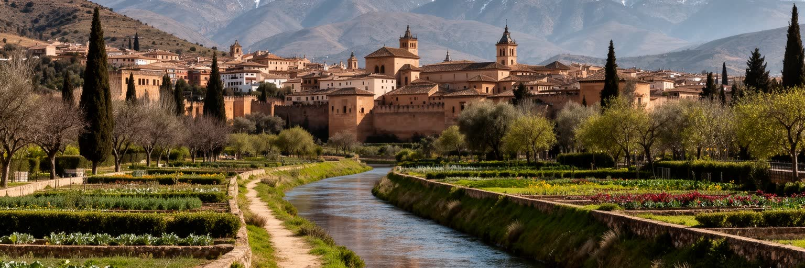
グラナダの景観を支えるのは石造りの宮殿だけではなく、シエラネバダから来る水です。ダロ川、ヘニル川、古い用水路、アセキア、庭園の水盤、噴水、果樹園は、乾燥した夏を生きるための技術と美意識を結びつけてきました。アルハンブラの水音は装飾ではなく、冷却、反射、権威、農業を同時に担う都市インフラの記憶です。雪解け水はベガの農地を潤し、野菜や果物、オリーブ、食卓の豊かさへつながる一方、気候変動と観光需要は水の使い方を問い直しています。噴水や庭園が美しいほど、見えない水源管理、漏水対策、節水、農業との配分が重要になります。水路は遺産であり、暑い街路を支える実用の仕組みでもあります。観光施設だけが水を使うのではなく、住民の洗濯、学校、公園、農地も同じ流域に依存します。古いアセキアを保つことは文化財保護であると同時に、熱波と渇水に備える気候適応でもあります。水音が街の魅力になるほど、渇水時に何を優先するかという判断は重くなります。山麓の村、農家、庭園、ホテルが同じ水を求めるため、配分は技術だけでなく政治の問題にもなります。水をたどると、古都の美しさの下にある流域全体の責任が見えてきます。雪が少ない年ほど、庭園美と日々の節水は同じ問題として住民の前に現れます。水を読むことが都市を読むことになります。この積み重ねが、都市の奥行きと持続力を静かにつきます。
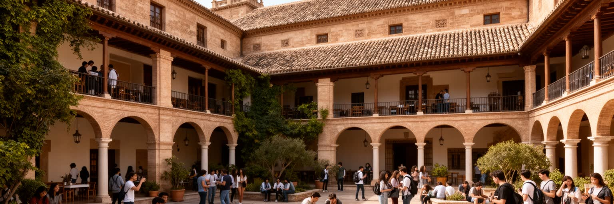
グラナダは観光都市である前に、強い大学都市でもあります。グラナダ大学はスペイン各地と国外から学生を集め、旧市街のカフェ、図書館、語学学校、シェア住宅、書店、夜の広場に若い時間を流し込みます。学生人口は街に活気を与え、語学、研究、医療、情報技術、人文系の学びを支えますが、学期のリズムは住宅市場や夜の騒音にも影響します。留学生は都市を国際化し、アラビア語、スペイン語、歴史、美術、翻訳、地中海研究の関心を運びます。大学は地域の雇用主であり、病院や研究機関とも結びつき、観光だけに依存しない知識の基盤を作ります。ですが学生向け賃貸が増えるほど、長期住民や低所得世帯の住まいは圧迫されやすいです。授業の言語、奨学金、夜間の安全、図書館の開放、アルバイトの条件は、学生生活を支える細かな基盤です。卒業後に残る仕事が少なければ、街は若さを集めても人材を逃します。研究、起業、公共サービス、文化施設が雇用を作れるかが、大学都市としての次の課題になります。大学が街に開かれるほど、講演、映画祭、音楽、医療支援、語学交流が地域の日常にも届きます。観光の季節性を越えて都市を動かす力が、学生と研究者の毎日の移動にあります。若い生活が入り続けることで、グラナダは記念碑の街に固定されず、学びの都市として更新されます。古都の未来は教室と路地の往復に宿ります。この積み重ねが、都市の奥行きと持続力を静かにつきます。
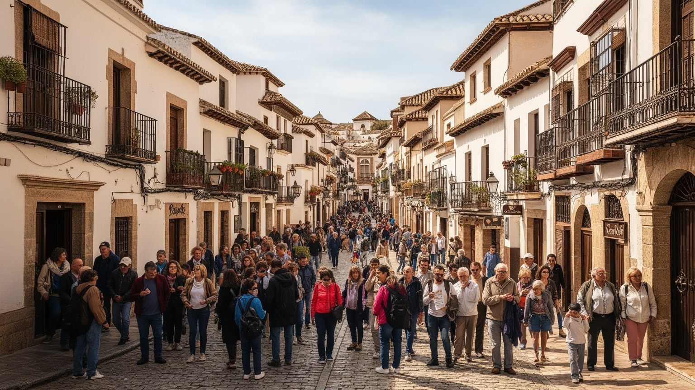
グラナダの観光は、アルハンブラ、アルバイシン、サクロモンテ、茶屋街、展望台、タパス文化を短い距離で体験できる強さを持ちます。その一方で、訪問者の集中は住民の暮らしに圧力をかけます。短期賃貸は家賃を押し上げ、土産物店や観光向け飲食が増えると、日用品店や近所の食堂が減ることがあります。狭い坂道ではスーツケース、撮影、配車、清掃車、地域住民の移動がぶつかり、夜の騒音やごみも問題になります。観光は雇用を生むが、宿泊、清掃、厨房、案内、警備の仕事は季節変動が大きく、賃金や休息が十分とは限りません。訪れる価値は、住民が住み続けられることで守られます。入場管理、住宅規制、公共交通、近隣商店、労働条件を同時に扱う必要があります。旅行者の動線を分散し、朝夕の生活時間を尊重し、学校や市場の周辺を過度に混ませない工夫も必要になります。観光収入を修復、清掃、公共トイレ、バス、住宅支援へ戻せるかが問われます。成功は写真の枚数ではなく生活の持続で測られます。観光客に分かりやすい案内は必要ですが、街を舞台装置にしすぎると地域の言葉や商いが薄れます。混雑を抑える政策は、旅行者の満足より前に住民の睡眠と移動を守るためにあります。坂道の写真を撮る時間と、同じ道を通って学校や職場へ向かう時間を両立させることが基本になります。観光の質は住民の余白で測られます。この積み重ねが、都市の奥行きと持続力を静かにつきます。
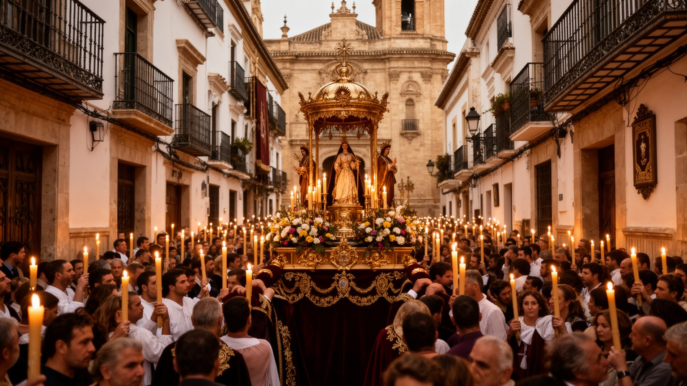
グラナダの宗教は、アルハンブラの装飾や大聖堂の壮大さだけでなく、街路の使われ方に現れます。聖週間には行列が坂道を進み、広場は祈り、音楽、待機、警備、清掃の場所へ変わります。教会の鐘、修道院の菓子、墓参、祭礼、ムスリム住民や留学生の礼拝、茶屋街の食の習慣は、異なる時代を同じ都市の日常へ戻します。宗教を観光的な異国情緒として消費すると、改宗、追放、同化、共同体の痛みは見えにくくなります。大切なのは、信仰を飾りではなく生活の手続きとして読むことです。案内板、博物館、学校、祭礼の交通整理、多言語の説明は、都市が複数の記憶をどう扱うかを示します。祈りと観光が近い都市ほど、静けさを守る判断が問われます。行列の日には住民の買い物、救急、バス、清掃も調整され、信仰は公共空間の運営そのものになります。宗教施設は観光客を迎えるだけでなく、地域の相談、寄付、葬送、季節の集まりを支えます。儀礼を読むことは、街が誰の時間を尊重しているかを読むことでもあります。信仰の場は、地域の孤立を防ぐ小さな安全網にもなります。観光客が通り過ぎる数時間の裏で、住民は祈り、弔い、祝い、助け合いを繰り返しています。儀礼が街路を占める日は、歴史が展示ではなく生活の暦として動いていることを実感させます。その時間を尊重することが共存の作法になります。この積み重ねが、都市の奥行きと持続力を静かにつきます。
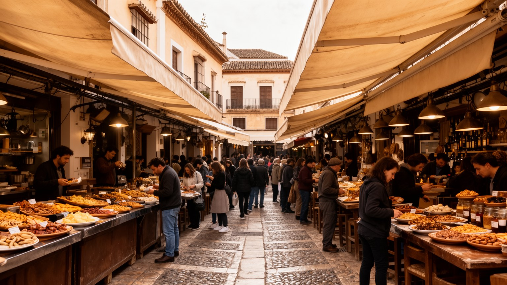
グラナダの食文化は、無料タパスの習慣、アンダルシアの油、山麓の野菜、豆料理、菓子、茶屋街、学生向けの安い食事が重なっています。飲み物を頼むと小皿が出る慣習は、旅行者には驚きであり、住民には友人と長く話すための都市の作法です。食卓にはイスラム期から続く香辛料や菓子の記憶、キリスト教の祭礼食、近郊農業、移民の料理も入り込みます。アルバイシンの茶屋や中心部のバルは観光資源になりますが、厨房、配膳、仕入れ、清掃、深夜の片付けがそのにぎわいを支えます。価格が観光客向けに上がると、学生や住民の普段使いの店は減りやすいです。食文化の魅力は名物だけではなく、誰が日常的に使えるかで決まります。市場、八百屋、パン屋、大学近くの食堂を結ぶと、食は観光の楽しみである前に、乾いた気候と学びの街を支える生活の燃料だと分かります。安さだけを魅力にすると、厨房の負担や農家の収入が見えなくなります。作る人が暮らせる条件を同じ皿の上で考える必要があります。昼の定食、夜のタパス、断食明けの食事、祭礼の菓子は、宗教と季節の記憶も運びます。食は路地の社交を作り、学生、住民、旅行者を同じカウンターへ近づけます。皿の小ささは軽さではなく、会話を長く続けるための都市の知恵でもあります。食卓は観光と生活を同じ高さに戻します。この積み重ねが、都市の奥行きと持続力を静かにつきます。
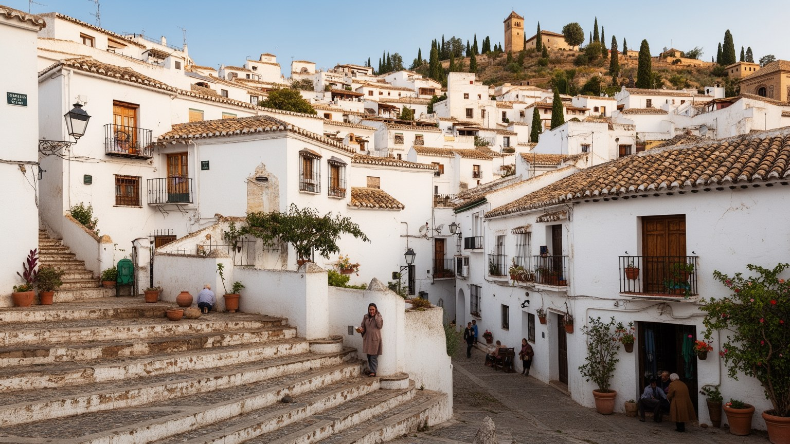
アルバイシンや旧市街の白い家並みはグラナダの象徴ですが、住む場所としては簡単ではありません。坂道、階段、狭い路地、古い建物、断熱の弱さ、車の入りにくさは、高齢者、子育て世帯、障害のある人、配達や介護の仕事に負担をかけます。眺望の良い住宅は観光向け宿泊へ転用されやすく、家賃が上がれば長く住んだ住民や学生、移民労働者が外へ押し出されます。古い住宅を修復することは景観を守る一方、費用が高く、所有者と借り手の利害も複雑になります。グラナダの住宅問題は大都市ほど巨大ではなくても、観光、学生需要、歴史保存、所得の低さが絡む深い課題です。美しい坂道を守ることは、買い物、通院、通学を続ける条件を守ることでもあります。郵便、救急、介護、修理が入りにくい路地では、景観の魅力と生活の不便が表裏一体になります。公共交通、家賃支援、改修補助、近隣商店の維持がなければ、歴史地区は住民の厚みを失い、短期滞在の舞台に傾いてしまいます。住民票を持つ人、学期だけ滞在する人、数日泊まる人のバランスを整えなければ、旧市街は暮らしの厚みを失います。その調整が都市の公平さになります。窓から宮殿が見える価値が上がるほど、家は住まいであると同時に投資対象にもなるため、政策の目配りが欠かせません。景観を守るなら、住む権利も守る必要があります。この積み重ねが、都市の奥行きと持続力を静かにつきます。
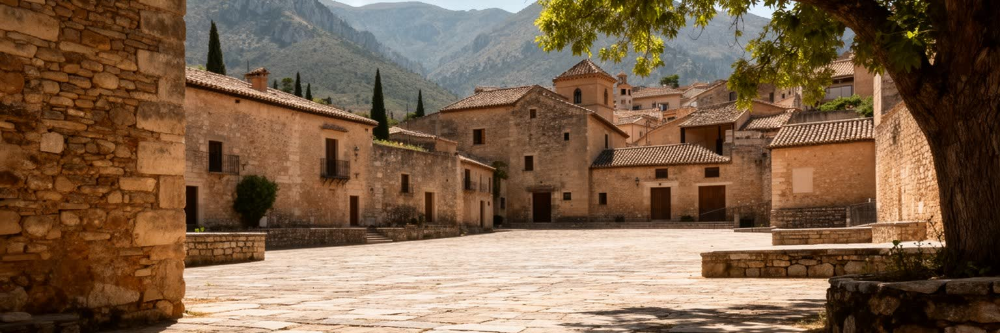
グラナダは南スペインの都市でありながら、標高と山の近さによって季節の差が大きいです。夏は乾き、日差しが強く、日陰、噴水、厚い壁、夜の外出が生活を助けます。冬は冷え込み、古い住宅では暖房費や断熱の弱さが問題になります。観光客は晴れた空を楽しむが、清掃、配達、厨房、建設、案内の労働者にとって暑さは職場環境の問題です。高齢者や低所得世帯には、冷房や暖房を十分に使えない日もあります。気候変動で熱波が増え、水資源が不安定になれば、庭園、農業、観光、公共空間の使い方も変わります。街路樹、日陰、断熱改修、涼める公共施設、節水、夜間交通は、景観ではなく生活を守る気候政策です。坂の多い街では、暑さも寒さも移動の負担を増やします。バス停の日陰、学校の校庭、病院へのアクセス、公共水飲み場、夜の安全な歩行空間は、気候への備えとして重要になります。季節の美しさを語るだけでなく、その気候が誰の身体に重くのしかかるかを見る必要があります。夏の観光を伸ばすほど、働く人の休憩、給水、シフト設計は欠かせません。冬の冷えも貧困と結びつくため、断熱改修は文化財保護と福祉の両方の課題になります。季節への備えは、住民が古都に残れるかを左右する中心的な条件です。気候は背景ではなく、都市の公平さを測る物差しでもあります。この積み重ねが、都市の奥行きと持続力を静かにつきます。
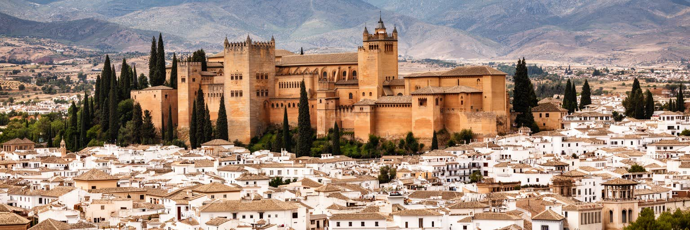
グラナダを読むことは、アルハンブラの美しさを入口にしながら、そこから旧市街の住宅、大学、食、宗教記憶、水、山、観光労働へ視線を広げることです。都市の規模は大きくないが、ナスル朝最後の都、キリスト教王権の象徴、アンダルシアの大学都市、国際観光地、シエラネバダの麓の生活圏という複数の役割が近距離に重なります。観光客が一日で歩ける範囲に、征服と共存の記憶、学生の賃貸、無料タパス、修復現場、茶屋、坂道の高齢者、宿泊労働者、水不足の不安が並びます。グラナダの価値は、過去の美を保存することだけでなく、その美を支える人が住み続けられる都市であることにあります。宮殿、庭園、山、路地を切り離さず、水と労働の流れでつなぐと、現代の課題が見えてきます。サクロモンテの歌、大学の夜、カテドラルの鐘、山から来る冷気、バルの皿洗いまで含めて見ると、古都は静止した絵ではなく毎日更新される生活圏です。宮殿を見た後に市場、大学、住宅地、川沿いへ歩くと、遺産と日常が同じ坂と水で結ばれていることが分かります。小ささは弱点ではなく、問題同士の近さを見せる強さでもあります。美しい都市ほど、誰の時間が支え、誰の住まいが脅かされるのかを丁寧に読む必要があります。核心は、宮殿の記憶と日常の不便が同じ距離で見えることにあります。その近さがグラナダを濃い都市にしています。